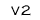

|
 |
 |
 |
 |
 |
 |  |
 |
Distributionerna är kompletta disk-bilder av systemet och kan packas upp direkt på en flashdisk med ett nyskapat och monterat filsystem. För detta behöver man ha tillgång till en Linux-maskin med flash-läsare.
Vissa saker behöver inte finnas med i Bifrost-distributionen, men kan i några fall vara trevliga att ha. Vi har därför sammanställt tar-filer med sådant som vi vid ett eller annat tillfälle har adderat till Bifrost för att lösa någon speciell uppgift.
Exempel på hur man gör för att från ett Linux-system skapa en bootbar flashdisk (distributionen antas ha tagits hem och finns under /usr/src):
OBS! Detta gäller bara fram till och med v5.18. Från och med v5.19 kör vi med GRUB och proceduren ser därmed något annorlunda ut. För att skapa en bootbar USB-sticka med GRUB, kan man använda scriptet makeusbmem. En enkel guide för hur scriptet används finns i bifrost-install-minihowto.txt.
fdisk /dev/hda ;skapa en partition interaktivt fdisk: Ta först bort eventuell FAT16-partition med d. Skapa en ny partition (/dev/hda1) med n och sätt boot-flaggan med a. Spara och avsluta med w. mke2fs /dev/hda1 ;skapa filsystem mount -t ext2 /dev/hda1 /mnt ;montera disken cd /mnt ;gå till monteringspunkten tar zxpf /usr/src/bifrost.5.18.tar.gz ;packa upp distributionen chroot /mnt /bin/bash ;ändra root-miljö cd / ;gå till nya root:en ls -alF ;kontrollera att det fungerade lilo ;kör lilo exit ;gå ur den nya root-miljön cd / ;lämna monteringspunkten umount /mnt ;avmontera disken e2fsck -f /dev/hda1 ;kontrollera filsystemet
För att rättigheterna och ägare ska bli korrekta på flashdisken, bör man lägga in en filter-användare i /etc/passwd och en filter-grupp i /etc/group på den maskin där man skriver ner distributionen på disk. Filter-användaren har dock tagits bort från och med Bifrost v4.x.
/etc/passwd filter:*:200:200:Filter User:: /etc/group filter::200:
Utvecklingspaket med gcc, en sen version av binutils, och libc-5.4.46. Dessutom program för kod-kontroll. I övrigt används RedHat 9 som utvecklingsplattform i och med Bifrost v5.6. För närvarande används följande:
gcc 3.2.2 glibc 2.3.2 autoconf 2.59 automake 1.9.3
Konfigurationsflaggor sätts (när så är möjligt) till:
CFLAGS="-Os -march=i386" ./configure --prefix=/usr --build=i386 och några exempel på ibland förekommande flaggor: ./configure --prefix=/opt/snmp --enable-ipv6 --with-tcp-wrappers --without-xauth --without-x11
Den äldsta distributionen använder 2.0.35-kärnan (från v1.3b). Källkoden och konfigurationen via använder finns här tillgänglig:
Distributionen t.o.m. v3.0beta4 använder 2.2.5-kärnan, komplett med ATM-kod, nya tulip-drivrutiner och konfigurationen. Sedan v3.0beta5 är det 2.2.13 som gäller. Notera att 2.2.13 inte är helt frisk och således är nu 2.2.14 eller 2.2.16 bättre alternativ.
Kärnor för senare versioner av Bifrost (v4 och v5):
Patchar som läggs in i kärnan för Bifrost:
Vi har även källkoden till några egna specialhack, samt en del program som modifierats eller på annat sätt är kritiska för distributionen. Dessutom går det att hitta en del manualsidor till viktiga program, här: